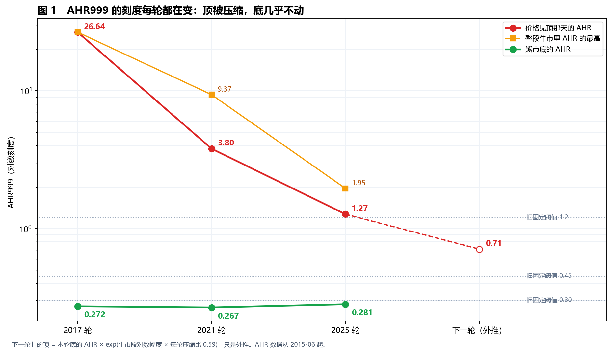
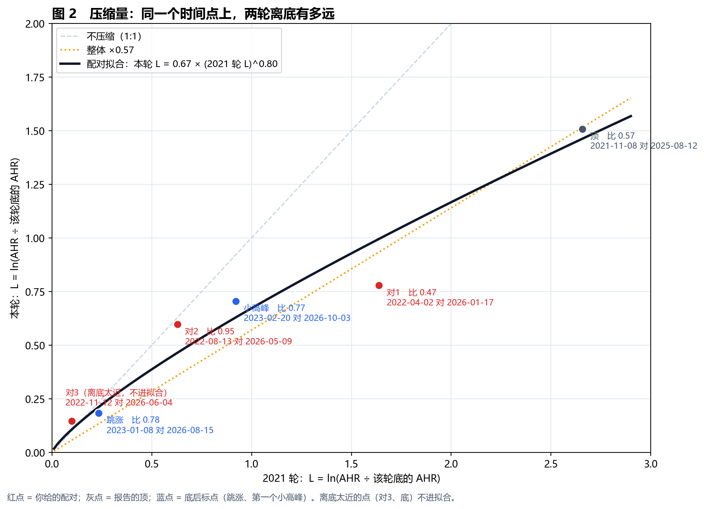
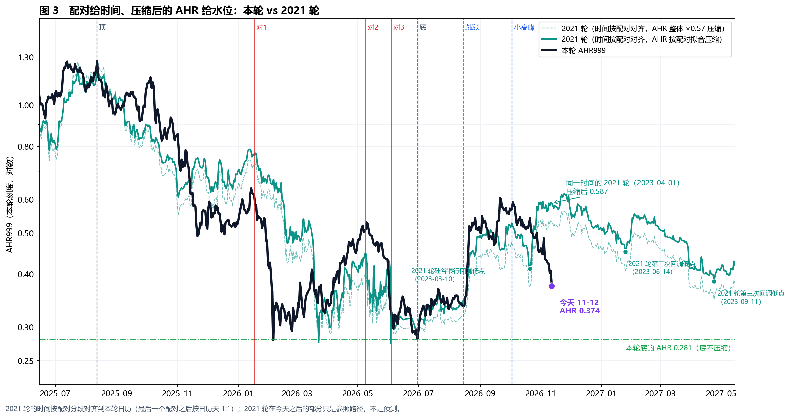
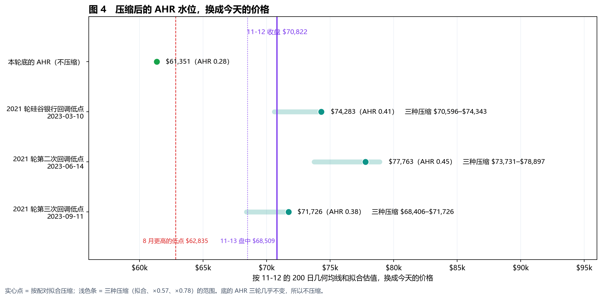

生成日期：2026-11-13 ｜ 数据截至 2026-11-12 收盘 $70,822（FRED），11-13 盘中约 $68,509（Yahoo，只作参考） ｜ 口径：本轮顶 2025-08-12，底 2026-06-30
一句话：AHR999 不能用固定阈值读——它的顶每轮被压缩（26.6 → 3.80 → 1.27），底几乎不动（0.272 → 0.267 → 0.281）。按「配对点位给时间、压缩后的 AHR 给水位」重读：这次回调比 2021 轮底后第一年里任何一次回调都深；时间上我们对应 2021 轮的 2023 年 4 月初，那时它已经在上涨，我们却退回到了跳涨和小高峰之间偏下。但离本轮底的 AHR 还有距离：AHR 回到本轮底的 0.281，对应今天约 $61.4k，和 8 月更高的低点 $62,835 很接近，这是「06-30 是底」的硬下沿；11-13 盘中价离它约 10%。以上都是历史参照，不是预测，也不是买卖信号。
你指出过很多次：AHR999 不是「低于某个数就自动买」，它的数字会随周期被压缩，和价格一样；配对点位告诉我们时间，AHR 告诉我们水位，但水位要先压缩再比。
10-01、11-06 版家长报告和 11-06 水位用的是固定阈值（0.30 / 0.45 / 1.2）和「全历史分位」，这是线性读法，有两个问题：
本页把这两点都换成压缩读法。离底多远统一用 L = ln(AHR ÷ 该轮底的 AHR)。

| 轮次 | 价格见顶那天的 AHR | 整段牛市里 AHR 的最高 | 熊市底的 AHR | 顶→底 L |
|---|---|---|---|---|
| 2017 轮 | 26.64（2017-12-16） | 26.64（同一天） | 0.272（2018-12-15） | 4.58 |
| 2021 轮 | 3.80（2021-11-08） | 9.37（2021-02-21） | 0.267（2022-11-21） | 2.66 |
| 2025 轮 | 1.27（2025-08-12） | 1.95（2024-03-13） | 0.281（2026-06-30） | 1.51 |
| 下一轮（外推） | 约 0.71 | — | — | — |
时间配对来自 user_pairs.csv：报告的顶、你给的三对（2022-04-02 ↔ 2026-01-17、2022-08-13 ↔ 2026-05-09、2022-11-12 ↔ 2026-06-04）、报告的底，加上底后的跳涨和第一个小高峰。

| 配对 | 2021 轮 | 本轮 | 本轮 L ÷ 2021 轮 L |
|---|---|---|---|
| 顶 | 2021-11-08 AHR 3.799（L +2.66） | 2025-08-12 AHR 1.270（L +1.51） | 0.57 |
| 对1 | 2022-04-02 AHR 1.373（L +1.64） | 2026-01-17 AHR 0.612（L +0.78） | 0.47 |
| 对2 | 2022-08-13 AHR 0.500（L +0.63） | 2026-05-09 AHR 0.510（L +0.60） | 0.95 |
| 对3 | 2022-11-12 AHR 0.294（L +0.10） | 2026-06-04 AHR 0.325（L +0.15） | 离底太近，不计 |
| 跳涨 | 2023-01-08 AHR 0.337（L +0.23） | 2026-08-15 AHR 0.337（L +0.18） | 0.78 |
| 第一个小高峰 | 2023-02-20 AHR 0.670（L +0.92） | 2026-10-03 AHR 0.569（L +0.70） | 0.77 |
拟合 5 个点（离底太近的不计）：本轮 L ≈ 0.67 × (2021 轮 L)^0.80。
| 2021 轮的 L | 0.25 | 0.50 | 1.00 | 2.00 |
|---|---|---|---|---|
| 换到本轮 | 0.22（×0.89） | 0.39（×0.77） | 0.67（×0.67） | 1.17（×0.58） |
读法：压缩不是一个固定倍数，而是高处压得多、低处压得少。这解释了为什么 0.3–0.5 这一段两轮几乎一样（对2：0.500 对 0.510），而顶部差了三倍。下文主要用这条拟合；整体 ×0.57、×0.78 两个倍数作对照。

AHR 由价格、200 日几何均线和拟合估值算出，价格大约和 AHR 的平方根成正比。下面按 11-12 的 200 日几何均线 $72,601、拟合估值 $184,495 换算。

| 水位 | 本轮刻度的 AHR | 今天对应价格 | 三种压缩的范围 |
|---|---|---|---|
| 本轮底的 AHR（不压缩） | 0.281 | $61,351 | — |
| 2021 轮硅谷银行回调低点（2023-03-10） | 0.41 | $74,283 | $70,596–$74,343 |
| 2021 轮第二次回调低点（2023-06-14） | 0.45 | $77,763 | $73,731–$78,897 |
| 2021 轮第三次回调低点（2023-09-11） | 0.38 | $71,726 | $68,406–$71,726 |
| 今天（11-12 收盘） | 0.374 | $70,822 | 11-13 盘中 $68,509 |
读法：
| 周期 | 底 | 底之后到下一个顶之前，AHR 的最低 |
|---|---|---|
| 2017 轮 | 2018-12-15（AHR 0.272） | 0.241（2020-03-12 新冠暴跌）：低于底的 AHR，但那时离底已 15 个月，价格仍比底高 56% |
| 2021 轮 | 2022-11-21（AHR 0.267） | 0.314（2022-12-28，跳涨之前）：没有回到底的水平 |
两轮成熟周期里，真底之后 AHR 只回到过一次底的水平，是一次全市场的黑天鹅。
ahr_compressed.py → ahr_compressed_numbers.txt（本页全部数字）、ahr_compressed_ladder.csv（§4 表）、png/fig1–fig4。analysis_runs/2026-11-13_manual_point_compare/user_pairs.csv（你给的三对 + 报告锚点 + 底后标点）。data/btc_merged_daily.csv（FRED CBBTCUSD 到 2026-11-12，末行是 Yahoo 11-13 盘中点，本页不用）。AHR999：signals/indicators.compute_ahr999。build_report.py（python-markdown + Chrome 无头打印）→ 本页的 HTML / PDF / TXT。免责声明：家庭内部研究材料，不是投资顾问建议。